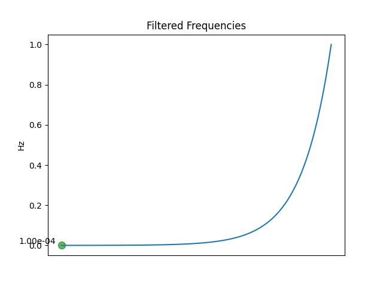
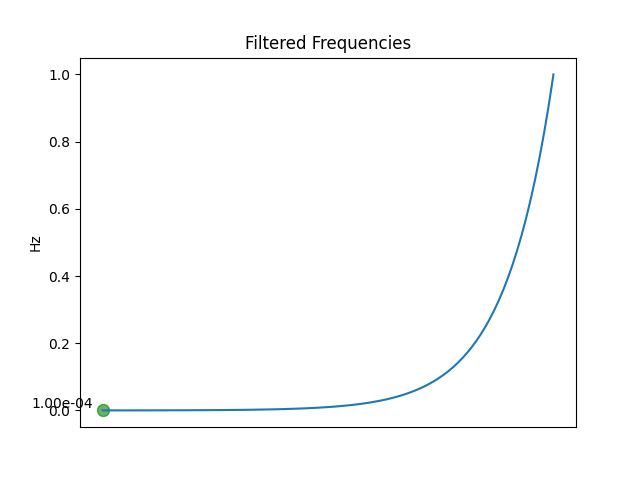
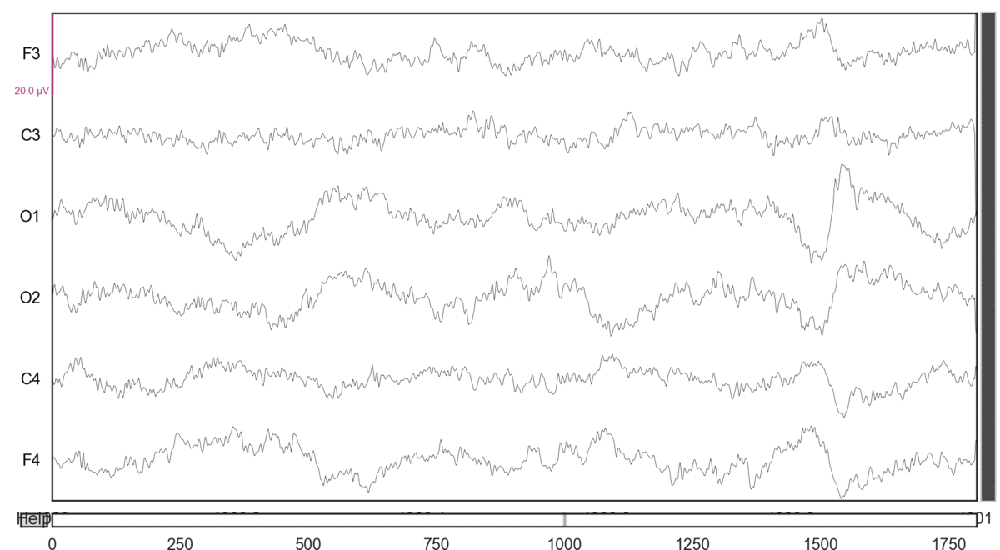
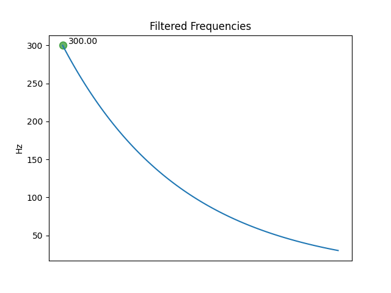

How To Prepare EEG Data

Applying a highpass filter to EEG (Electroencephalography) signals is a common preprocessing step in signal processing and analysis. The primary purpose of a highpass filter is to remove low-frequency noise or baseline drift from the EEG signals.
Baseline drift is a common artifact that occurs due to electrode movement or other sources of interference, resulting in slow fluctuations in the EEG signal. These slow fluctuations can mask or obscure important features of the EEG signal, such as event-related potentials (ERPs) or high-frequency oscillations (HFOs), which are typically of interest in EEG research.
 

By applying a highpass filter, we can effectively remove the low-frequency components of the EEG signal, while preserving the high-frequency components. This improves the signal-to-noise ratio (SNR) and allows us to better visualize and analyze the high-frequency features of the EEG signa
It's important to note that the specific cutoff frequency of the highpass filter depends on the research question and the characteristics of the EEG signal being analyzed. Too high of a cutoff frequency can result in loss of information, while too low of a cutoff frequency can leave in too much low-frequency noise.
 Applying a lowpass filter to EEG (Electroencephalography) signals is another common preprocessing step in signal processing and analysis. The primary purpose of a lowpass filter is to remove high-frequency noise or artifacts from the EEG signals.
High-frequency noise or artifacts can be introduced into the EEG signal due to various sources, such as muscle activity, eye movements, or electrical interference from other devices. These high-frequency components can mask or distort the underlying EEG signal, making it difficult to interpret or analyze.
By applying a lowpass filter, we can effectively remove the high-frequency noise or artifacts from the EEG signal, while preserving the low-frequency components. This improves the signal-to-noise ratio (SNR) and allows us to better visualize and analyze the low-frequency features of the EEG signal, such as the slow waves and oscillations that are characteristic of different brain states and disorders.
It's important to note that the specific cutoff frequency of the lowpass filter depends on the research question and the characteristics of the EEG signal being analyzed. Too low of a cutoff frequency can result in loss of information, while too high of a cutoff frequency can leave in too much high-frequency noise or artifacts. Therefore, the selection of the appropriate filter parameters is crucial for obtaining accurate and reliable results from EEG analysis.